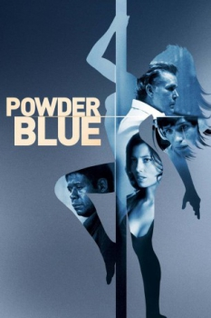

Ponto de Partida (2009)


Every life has a breaking point

Avaliação (TMDb):


6.0/10 (143 votos)
Avaliação (Usuário):
Outro Título:Powder Blue
País:United States, 106 minutos
Idiomas falados:Inglês, Português
Gênero(s):Drama
Diretor(s):Timothy Linh Bui
Codec:MPEG-2 (DVD)
Número: 4613
Sinopse:
Rose é uma stripper que, em busca de salvar seu filho de uma doença terminal, acaba tendo sua vida entrelaçada com a de um ex-padre suicida, um ex-condenado e um agente funerário, na noite de Réveillon.
Elenco:
Jessica Biel, Eddie Redmayne, Forest Whitaker, Ray Liotta, Patrick Swayze, Lisa Kudrow, Kris Kristofferson, Sanaa Lathan, Chandler Canterbury, Navid Negahban
Tipo de mídia: DVD5,
Legendas: Inglês, Português,
Alugado: Não
Tela: 2.35:1